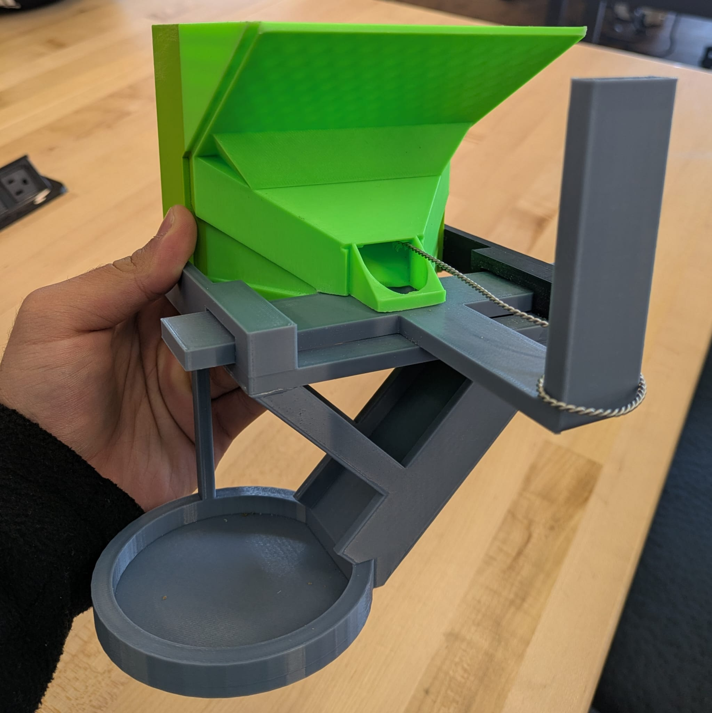

Alpha 1
Mechanism check
Tested the basic pull-slide dispensing principle and identified changes needed for reliable single-kibble output.
Academic team project · Product design
A purely mechanical dispenser designed for low-dexterity users to reward a service dog without dropping kibble on the ground.

01 · Requirements
The team defined three primary user needs: easy operation, consistent output, and easy transport. The device also had to remain under 5 lb, mount in less than two minutes, use no electronics, and keep kibble off the ground.
The system was divided into four functions: store kibble, dispense one piece, catch or direct it, and attach the device to the wheelchair.
02 · Concept selection and prototypes
The team compared five dispensing concepts with screening and weighted-selection methods. A pull-slide mechanism was selected and refined through two alpha prototypes and one beta prototype.
Alpha 1
Tested the basic pull-slide dispensing principle and identified changes needed for reliable single-kibble output.
Alpha 2
Adjusted the mechanism and mounting arrangement based on the first prototype.
Beta
Added flexible backpack-style straps, a weather-resistant lid, and two dispensing ports.
Result
The project summary reports consistent single-kibble dispensing without jamming or spilling and states that the performance metrics were met.